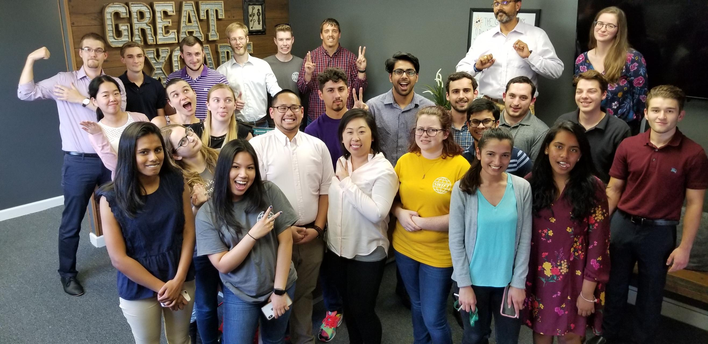

My Time at Swift
Working at Swift this past summer was an incredible experience and I ended up learning a lot more than I thought I would! Initially, I was extremely nervous since it was my first ever internship, and I hadn't had any experience working in a professional environment; and the heavy security throughout the building definitely didn't help ease my mind. However, after getting through the first week and becoming familiar with my mentor and fellow interns, Swift began to feel like home.
 Group picture at the local escape room!One of the most enjoyable parts of working at Swift was the people, they were very kind and loved having interns around. If we ever had any questions or were unsure of what our current tasks were, they were incredibly patient and cleared up any confusion we had. Another cool part of working there was the game room, which is where I spent the majority of my lunch break (for better or for worse :/). They had a Nintendo Switch, where I played A LOT of Super Smash Bros. Ultimate, and a ping pong table, where I got pummeled by seasoned employees who practiced there everyday. Aside from getting whooped in ping pong though, I learned a lot of valuable CS and professional skills during my time at Swift.
While there, my mentors taught me a lot about professional work flows like agile and waterfall methodologies. Furthermore, through working on my summer project with another fellow intern, I got a lot of experience with Github and became a lot more comfortable with it. I always used to use it for personal projects so I could work across machines, but I never knew just how powerful of a tool it could be! I also learned a lot about python package development, which was way more complicated than I thought it was. The architectural design that went in to python packaging was a foreign concept to me before the summer, but now I have really come to appreciate the protocols and PEP standards that have been set to help developers create packages. I also got the opportunity to do a lot of work with the gRPC library and Tox environment software. I was using gRPC to connect and make API calls to the Swift SnF service, and Tox to run tests in an isolated environemnt that used said API calls to create message flows used for testing the SnF service.
Out of all the things I had learned while with the Swift team, learning how to use Vim was by far the coolest. All of our team's development had to be done through Vim, because we were working on remote RHEL systems strictly through the command line. When I first started out with Vim, I was so scared to press any button in fear that I would accidentally delete all my code (as it had happened quite a few times while I was learning). After getting some of the basic key commands down, I was amazed at how fast I was able to write code. I haven't gotten advanced enough to make my own macros and keybinds but perhaps I will get there in the future. I also learned about the vim mode that is built in to bash, and at that point I couldn't believe I had gone so long with picking up Vim.
Overall, I am really grateful for the opportunities Swift gave me this summer to meet lots of awesome new people and learn a lot about technologies and coding paradigms that I had previously been a stranger to. Hopefully I will get the chance to go back this summer and continue my work with them, and learn a lot more in the process!